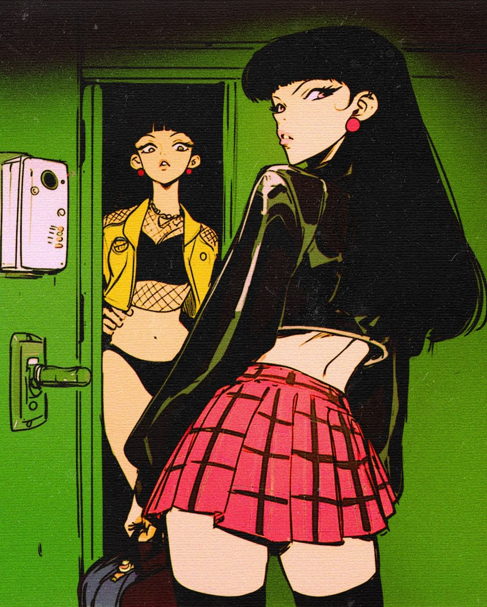

Hi! I'm
UluçKaymakA person who loves learning and creating new things.
I am a multidisciplinary artist who combines conceptual art with the pieces of the culture I was born and raised in, figurative points in audio and/or visual, interactive, and algorithmic forms. My projects often revolve around themes such as human perception, experience, and psychology.
On my personal projects, I work on fractured emotions and thoughts through various forms of digital projection, focusing on interactive audio-visual experience.
I'm Uluç — a digital artist, thinker, and experimenter.
